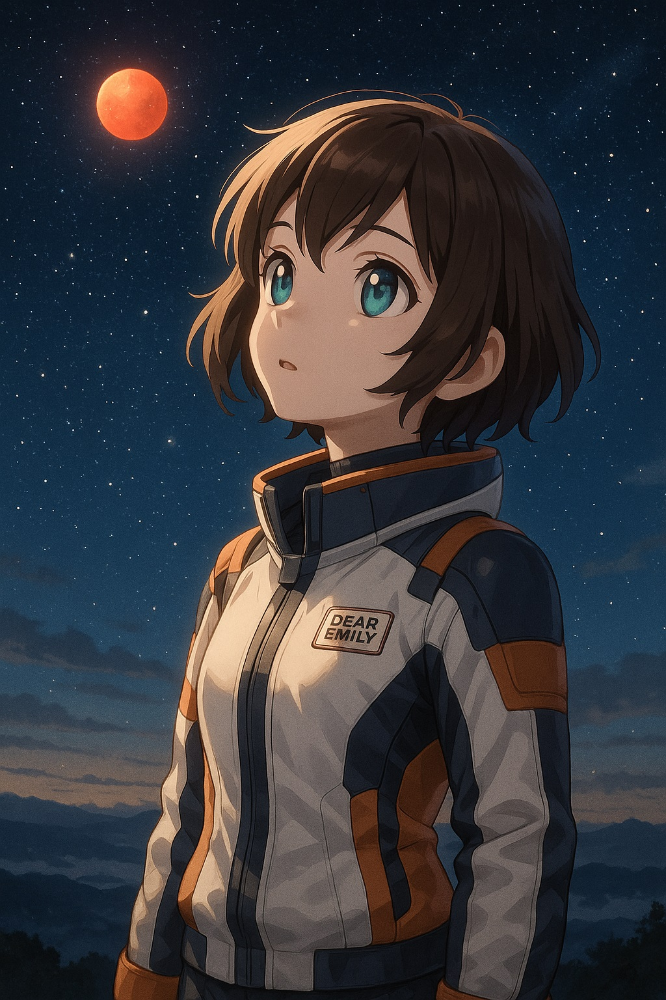
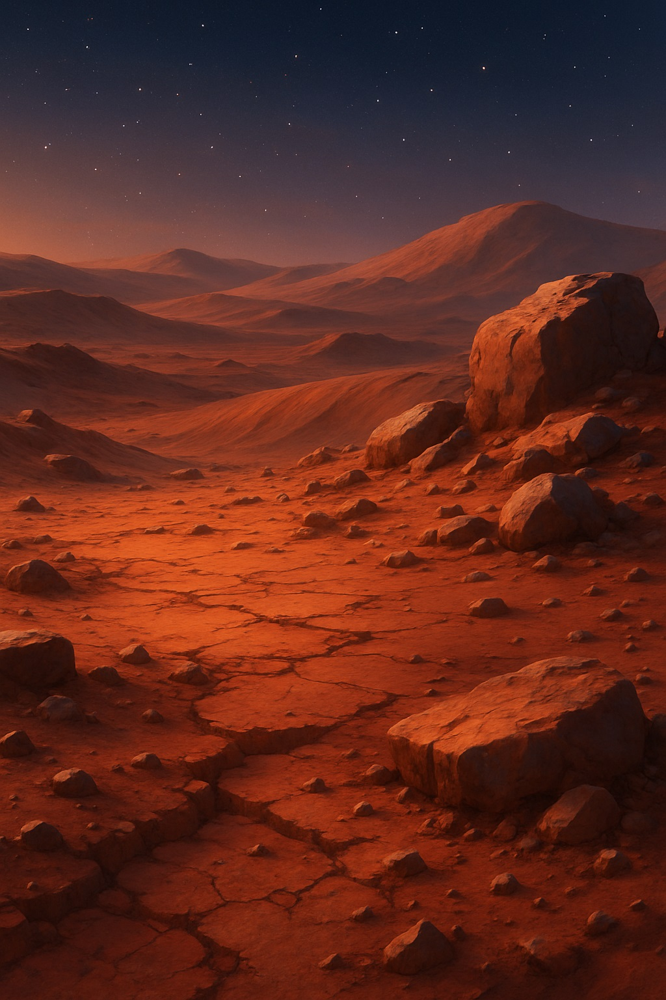
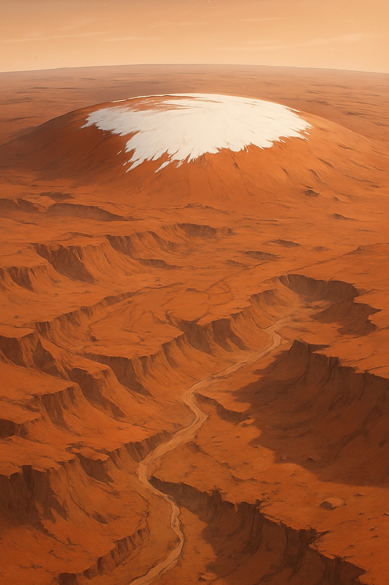
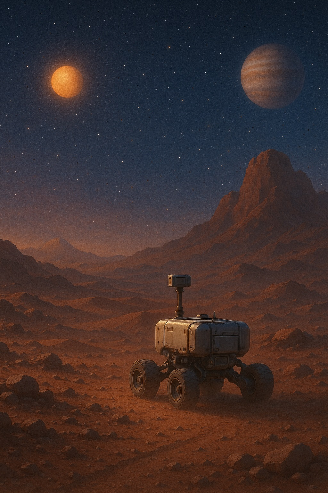

🔥セーラー・マーズに教えてもらう火星のひみつ
〜赤い情熱の星が語るもの〜

夜空に輝く火星は、どんな物語を語っているんだろう？
【導入】
ねえエミリー、火星って聞いたことあるかな？あの赤くてキラキラ光る星が、夜空でひときわ目立つのを見つけたことはない？太陽のあたたかい日差しを遠くに感じつつ、そのまわりをくるくる回っている小さな赤い惑星…今日はその火星の魅力を、セーラー・マーズになりきって一緒に探検してみよう！
セーラー・マーズは、情熱と強さを象徴する火星の戦士。彼女のように火星も、私たちに「自分を信じる強さ」や「内に秘めた炎」のようなものをそっと教えてくれるんだよ。
🌕 火星ってどんな星？
赤サビ色の大地が火星の特徴だよ。
火星（Mars）は太陽系の4番目、地球のひとつ外側をまわっている惑星。赤い色をしているから「**レッドプラネット**」と呼ばれるんだ。その赤さは、火星の表面にふくまれる鉄分が太陽光でサビ化し、まるで情熱の色をまとったかのように輝いているからなんだよ。
昼間は晴れると20℃くらいまで気温が上がる日もあるけれど、夜になると−60℃以下まで冷え込むこともあるの。まるで炎と氷を同時に感じるような、極端な温度差が火星の大きな特徴なんだ。
火星は昔から“戦いの星”や“情熱の星”と言われているよ。まさにセーラー・マーズのように、強さと美しさを兼ね備えた存在なんだね。
🔴 火星の主なポイント
火星には巨大な地形もあるんだよ！
- 赤い大地：鉄酸化物（赤サビ）が表面を覆い、夕陽を受けるとまるで燃えるかのように赤く輝く。
- 地球との似ている点：1日の長さは約24時間39分。自転軸が傾いているため、四季のような変化もあるんだ。
- 極端な気候：大気はとても薄く、昼夜の温度差は最大100℃にもなる。砂嵐が惑星全体を覆うこともあるよ。
- 極冠の氷：極地に二酸化炭素のドライアイスが凍っているほか、地下には水の氷が眠っている。
- 巨大地形：オリンポス山（標高約21,000m）やマリネリス峡谷（深さ約8km・長さ約4,800km）など、地球をはるかに超えるスケール。
- 探査の歩み：マリナー4号、マリナー9号、バイキング、そしてキュリオシティやパーサヴィアランスまで続く、火星を知るための長い旅路。
- ふたつの衛星：フォボスとダイモスは小さく不規則な形で、火星に衝突した天体のかけらとも言われているよ。
🌌 火星の昔と未来
パーサヴィアランスのような探査機たちが、火星の秘密を探っているよ。
NASAの観測によると、かつて火星の表面には川や湖があった証拠が見つかっているんだ。まるで地球のように水の時代を経験した火星は、今は乾いた荒野だけれど、その地下にはまだたくさんの氷が残っているんだよ。
未来の人類が火星に住む日は来るだろうか？パーサヴィアランスや他の探査機たちは、そのヒントを一つずつ集め続けているんだ。
まるでアルテミスのように、探査機たちも火星の謎を解くために大活躍しているんだね。
🔭 赤く見えるヒミツは？
火星の土や石には鉄分が多く含まれていて、空気と触れて酸化することで赤いサビ色に変わるんだ。これは何億年もの時間をかけて進んだ自然の化学変化の証し。
だから、火星はまるで自ら情熱をまとったように、夜空の中でもひときわ赤く輝いているんだよ。
✨ 火星とエミリー
火星はただの赤い星じゃない。昔の水の記憶、極端な寒暖差、巨大な地形、そして未来への可能性……そのすべてが情熱的な物語を紡いでいるんだ。
セーラー・マーズのように、自分の信じる道を強く、優しく進む勇気を、火星からもらえるかもしれないね。
次は、太陽系最大の守護者「ジュピター」の嵐と秘密を探りに行こう！
今日の宇宙の神秘 - Astronomy Picture of the Day
コンテンツを読み込み中...